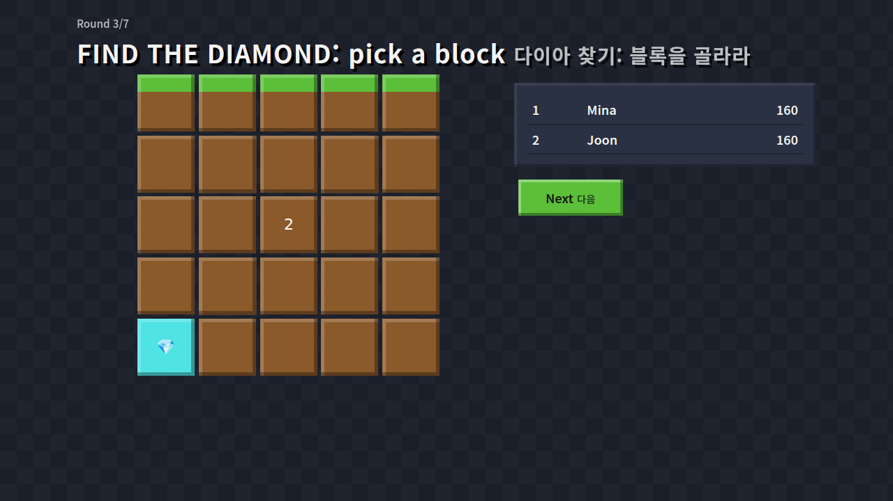
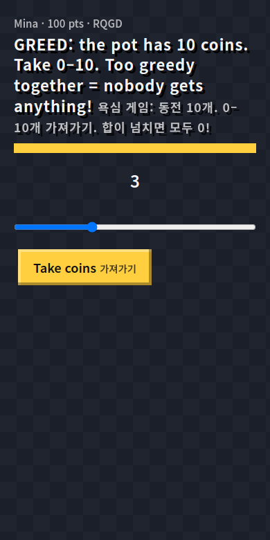

For creator partner: GodDot / Dname (YouTube @d_name0) — Hack the Audience 2026 (Extriver Partners).
Live prototype: https://extriver-proto.nightshift-labs.workers.dev · Status page: https://extriver-monitor.nightshift-labs.workers.dev/status
한국어: 한 쪽 요약 · 피치덱 PDF · 데모 영상 (한국어 자막)
Docs: business model + 4-scenario funnel (tools/model.py) · creator research · pitch deck docs/pitch.pdf · 2:52 demo video docs/demo.mp4 (a real episode recorded in production: one phone played by a script plus 9 bot players over WebSocket; rebuild with tools/recvideo.mjs + tools/makevideo.sh).
Judge it in 60 seconds
- Open the Dname version https://extriver-proto.nightshift-labs.workers.dev/?creator=dname (Korean first; plain English version: https://extriver-proto.nightshift-labs.workers.dev/?lang=en) and click "혼자 체험하기 (봇 6명)" ("Try it alone (with 6 bots)"). The big screen shows a room code and a QR code.
- Scan the QR code with your phone (or open the join link in a second tab) and play the 7 rounds. The bots answer too, so every reveal has a crowd.
- On the final screen, click "쇼츠 만들기 · Make a Short" to get a 1080×1920 recap video of your episode, made in the browser. Prefer watching? 2:52 demo video with EN/한국어 subtitles.
| Big screen: lobby | Big screen: a reveal | Phone |
|---|---|---|
|
 |
 |
Dname's shorts are already games — "find the diamond and win", greed game, block telepathy, trust game — and his tagline is "Subscribe and join the game!". Block Party Challenge lets his viewers actually play those formats with him and with each other: one big screen (his stream, a classroom TV, a living-room TV) and everyone joins from their phone with a 4-letter code or QR. No app, no account.
/?daily=1, 오늘의 챌린지): shorts viewers arrive at any hour, not just during the weekly live final. Every Korean day has
the same 5 rounds for everyone (seeded by date). You play against today's crowd: telepathy scores the % of players who picked what you picked,
and lava gives a bonus if under 5% stood on your block. Ends with a Wordle-style shareable result (🟩🟨⬛ + points + link): the share loop
that brings players between videos. One SQLite Durable Object per day; one answer per browser per round (anonymous token; best effort: clearing browser storage gives a new token, so the crowd counts are for fun, not prizes)./?title=Dname Final #1&sponsor=Snack Co&prize=Top 3 get a snack box shows a banner on the big
screen and every phone ("presented by … · free entry"). The prize is only described. Nothing is collected or paid through the game. A sponsor can also own round 1: add &sq=Best snack flavour?&so=Honey|Spicy|Cheese|Onion (optional Korean text: &sqk=최고의 과자 맛은?&sok=허니|매운맛|치즈|양파) and the first round becomes a telepathy round with the sponsor's question (2–4 options; screenshot), so the brand gets real play time and a vote split, not just a logo. After the episode the host downloads a sponsor report (📊 button on the final screen: peak players, minutes of play and player-minutes with the banner, answers per round, vote split; counted from the live game state, no nicknames or personal data). Test: node tools/reporttest.mjs <url> <outdir>. Works in the overlay URL too./?creator=dname → "디네임 챌린지 아레나" home, "디네임 파이널 · Dname Final" banner on every screen, Korean-first text (also automatic for Korean browsers; ?lang=ko / ?lang=en to force), phone QR links open in Korean. Live: https://extriver-proto.nightshift-labs.workers.dev/?creator=dnamenode tools/shorttest.mjs <url> /tmp/short.webm./?overlay=1 as an OBS browser source — opens straight into a new room (code + QR, no clicks), transparent background, outlined text, keyboard-driven (Space/Enter: start → reveal → next). Dname makes shorts, not streams, so the main use is recording a weekly "Dname Final" played by viewers on their phones (announced in a short + pinned comment), then cutting it into his next short with the Make a Short button. It also works live if he ever streams.Pricing: requests $0.15 per million (incoming WebSocket messages count 20:1), duration $12.50 per million GB-s (128 MB per object; hibernated rooms are not billed), SQLite rows written $1.00 per million. Free plan: 100k requests, 13,000 GB-s and 100k rows written per day.
| One 7-round episode | 10 players (friends) | 300 players (stream) |
|---|---|---|
| DO requests (1 join + 7 answers ÷ 20 per player) | ≈ 14 | ≈ 405 |
| Active duration (≈0.3 s per broadcast burst, assumed) | ≈ 15 s → 2 GB-s | ≈ 105 s → 13 GB-s |
| Rows written (state snapshots, throttled) | ≈ 20 | ≈ 60 |
| Cost | ≈ $0.00003 | ≈ $0.0003 |
Measured in production (Cloudflare analytics, 2026-11-06 09:00 → 11-07 09:00 UTC): the Room Durable Object served the 24 hourly synthetic episodes (host + 2 bot phones, full episode) plus a little manual testing: 146.9 s active time in total (≈6.1 s per episode → ≈0.8 GB-s at 128 MB), 1.06 s CPU (≈44 ms per episode), 1,390 requests (≈58 per episode, an upper bound because it includes manual tests). That is ≈$0.00002 per 3-player episode, the same order as the estimate above, so the 0.3 s-per-burst assumption is not too low for small rooms. Big 300-player rooms are still an estimate (the 200-phone load test measures latency, not billing).
So 1 million player-episodes cost roughly $1–5 in infrastructure, and the free plan (100k Durable Object requests a day) is enough for testing and friend-group rooms. We do not claim a number of stream-size episodes per day on the free plan (not measured at 300 phones yet); stream use is budgeted on the paid plan ($5/month base). Caveat: the free Durable Object quota is shared by every Worker on the account; on Nov 7 a bug in another service of ours used it up for a day (fixed; the game shows a friendly "short break" line instead of failing). Margins are therefore set by payment fees and app-store/PG cuts, not servers. Still an assumption: the per-burst duration of a full 300-player room, which the 300-phone load test will measure.
app/test/alarm-e2e.mjs).app/test/room-e2e.mjs <url> 200). Earlier runs the same day: p50 192–238 ms./health every 5 min (liveness; a leaderboard-database failure is reported as "degraded", not down, because games keep running; /health?ready=1 is the strict readiness check), public status page with 24 h game uptime, full-service % and p50/p95; emails the on-call inbox (read by the operator agent, see docs/OPS.md) after 2 failed checks in a row and on recovery; daily leaderboard backup (14 days, /backups.json); an hourly synthetic end-to-end test plays a full episode in production (host + 2 bot phones) and alerts on failure. Maintenance plan, on-call and restore steps: docs/OPS.md.app/src/namefilter.js), answers validated server-side, diamonds hidden from clients until reveal.wrangler rollback). CI/CD pipeline written (ci/ci.yml in the repo: tests → deploy → production smoke test → automatic rollback) but not yet enabled in GitHub Actions (our token lacks the workflow scope); today the same steps are run by hand, and an hourly production end-to-end test runs from the monitor.